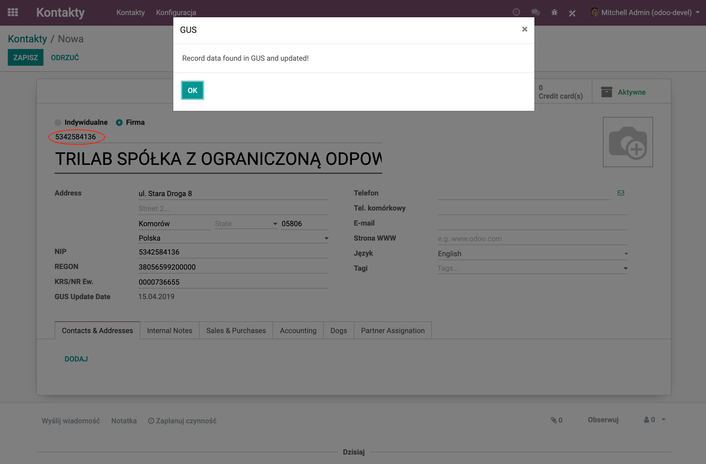
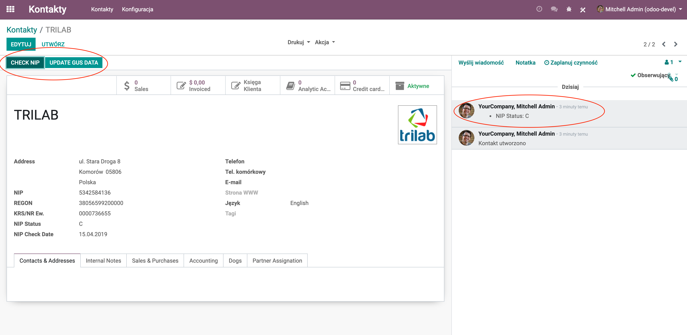

-
Autocomplete data from the Polish GUS/Regon database during the creation or editing
existing partner (company).
-
Validating the status of the entity in VAT (in the Poland Ministry of Finance database)
with status change history.
-
Validating the status of parent in Bad Debtors Register - Krajowy Rejestr Długów,
with status validation history.
Mass actions:
- mass validation of the VAT status of contractors
- mass update of data from the CSO / REGON database
To use this module, you need an API key obtained from
GUS Page.
This module requires two external python modules: 'gusregon' and 'zeep'.
Make sure, that those modules are installed before installing this module.
For odoo.sh, add those modules in requirements.txt file in root of your branch.
-
Automatyczne podpowiadanie danych z bazy GUS/Regon w trakcie zakładania nowego lub edycji
istniejącego kontrahenta.

-
Sprawdzanie statusu podmiotu w VAT (w bazie danych Ministerstwa finansów) z zapisywaniem
historii w przypadku zmian statusu.
-
Sprawdzanie statusu podmiotu bazie KRD - Krajowego Rejestru Długów
z zapisywaniem historii weryfikacji.

Akcje masowe:
- masowe sprawdzanie statusu VAT kontrahentów
- masowa aktualizacja danych z bazy GUS/REGON
Moduł ten wymaga:
- klucza dostępu do API GUS. Klucz ten można uzyskać po zarejestrowaniu się na href="https://api.stat.gov.pl/Home/RegonApi">Stronie GUS
- użytkownika u hasła do KRD (usługa oddzielnie płatba w KRD).
Moduł ten używa dwu zewnętrznych bibliotek python: 'gusregon' and 'zeep'.
Upewnij się, że biblioteki te są zainstalowane przed uruchomieniem instalacji tego modułu.
Dla odoo.sh, dodaj te biblioteki do pliku requirements.txt w katalogu głównym
swojego brancha.
Wspiera wersję 12 Odoo.